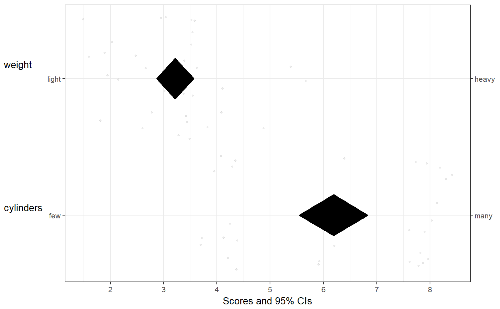

This is basically a meansDiamondPlot, but extended to
allow specifying subquestions and anchors at the left and right side.
This is convenient for psychological questionnaires when the anchors
or dimensions were different from item to item. This function is used
to function the left panel of the CIBER plot.
biAxisDiamondPlot(dat, items = NULL, leftAnchors = NULL, rightAnchors = NULL, subQuestions = NULL, decreasing = NULL, conf.level = 0.95, showData = TRUE, dataAlpha = 0.1, dataColor = "#444444", diamondColors = NULL, jitterWidth = 0.45, jitterHeight = 0.45, xbreaks = NULL, xLabels = NA, xAxisLab = paste0("Scores and ", round(100 * conf.level, 2), "% CIs"), drawPlot = TRUE, returnPlotOnly = TRUE, baseSize = 1, dotSize = baseSize, baseFontSize = 10 * baseSize, theme = theme_bw(base_size = baseFontSize), outputFile = NULL, outputWidth = 10, outputHeight = 10, ggsaveParams = list(units='cm', dpi=300, type="cairo"), ...)
| dat | The dataframe containing the variables. |
|---|---|
| items | The variables to include. |
| leftAnchors | The anchors to display on the left side of the left hand panel. If the
items were measured with one variable each, this can be used to
show the anchors that were used for the respective scales. Must have the
same length as |
| rightAnchors | The anchors to display on the left side of the left hand panel. If the
items were measured with one variable each, this can be used to
show the anchors that were used for the respective scales. Must have the
same length as |
| subQuestions | The subquestions used to measure each item. This can also be
used to provide pretty names for the variables if the items
were not measured by one question each. Must have the same length as
|
| decreasing | Whether to sort the items. Specify |
| conf.level | The confidence levels for the confidence intervals. |
| showData | Whether to show the individual datapoints. |
| dataAlpha | The alpha level (transparency) of the individual datapoints. Value between 0 and 1, where 0 signifies complete transparency (i.e. invisibility) and 1 signifies complete 'opaqueness'. |
| dataColor | The color to use for the individual datapoints. |
| diamondColors | The colours to use for the diamonds. If NULL,
the |
| jitterWidth | How much to jitter the individual datapoints horizontally. |
| jitterHeight | How much to jitter the individual datapoints vertically. |
| xbreaks | Which breaks to use on the X axis (can be useful to override
|
| xLabels | Which labels to use for those breaks (can be useful to override
|
| xAxisLab | Axis label for the X axis. |
| drawPlot | Whether to draw the plot, or only return it. |
| returnPlotOnly | Whether to return the entire object that is generated (including all intermediate objects) or only the plot. |
| baseSize | This can be used to efficiently change the size of most plot elements. |
| dotSize | This is the size of the points used to show the individual data points in the left hand plot. |
| baseFontSize | This can be used to set the font size separately from the |
| theme | This is the theme that is used for the plots. |
| outputFile | A file to which to save the plot. |
| outputWidth, outputHeight | Width and height of saved plot (specified in centimeters by default, see |
| ggsaveParams | Parameters to pass to ggsave when saving the plot. |
| … | These arguments are passed on to |
This is a diamondplot that can be used for items/questions where
the anchors of the response scales could be different for every
item. For the rest, it is very similar to meansDiamondPlot.
Either just a plot (a gtable object) or an object
with all produced objects and that plot.
biAxisDiamondPlot(dat=mtcars, items=c('cyl', 'wt'), subQuestions=c('cylinders', 'weight'), leftAnchors=c('few', 'light'), rightAnchors=c('many', 'heavy'), xbreaks=0:8);